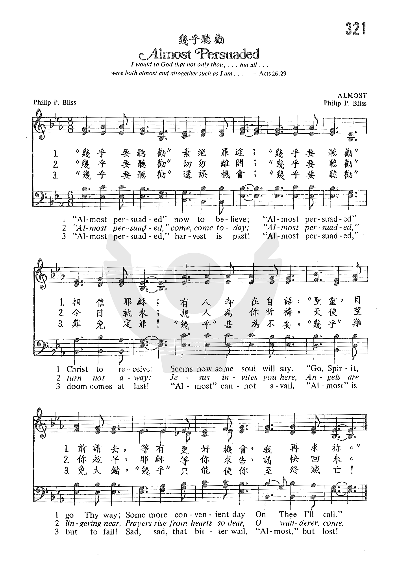
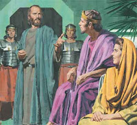

|
|
|
|
1 “Almost persuaded” now to believe; 2 “Almost persuaded,” come, come today; 3 “Almost persuaded,” harvest is past! |
321 幾乎聽勸 |
|
https://www.zanmeishige.com/tab/25689.html?songbook=1&index=321
 |
|
|
|
|

https://youtu.be/4Yam-kIiN90 -
Story Behind - Almost Persuaded https://youtu.be/2hsHvUYrqZE - Almost Persuaded - The Louvin Brothers (with lyrics)
https://youtu.be/CynxDodfsMQ -
Almost Persuaded Now to Believe.wmv https://youtu.be/DkTHPbMzhGU
0972
Almost Persuaded 几乎听劝
| Text: | Almost Persuaded |
| Author: | Philip P. Bliss, 1838-1876 |
| Tune: | [Almost persuaded, now to believe] |
| Composer: | Philip P. Bliss, 1838-1876 |

Notes
Almost persuaded now to believe. Procrastination. This was suggested by the following passage in a sermon by the Rev. Mr. Brundage, Bliss being present at its delivery:—" He who is almost persuaded is almost saved, but to be almost saved is to be entirely lost."
--John Julian, Dictionary of Hymnology (1907)
Tune Information
| Title: | [Almost persuaded now to believe] (Bliss) |
| Composer: | P. P. Bliss (1871) |
| Meter: | Irregular |
| Incipit: | 34431 12233 44312 |
| Key: | G Major |
| Copyright: | Public Domain |
Words: Philip Paul Bliss (b. July 9, 1838; d. Dec. 29,
1876)
Music: Philip Paul Bliss
Links:
Wordwise Hymns (Philip
Bliss died)
The Cyber
Hymnal
Note: The story of the Blisses tragic death in a train accident is told in the Wordwise Hymns link. This gospel song was written five years before, in 1871.
Philip Bliss penned the words of this sobering hymn after hearing a Reverend Brundage preach a gospel message on Acts 26:28. The text reports, “Then Agrippa said unto Paul, ‘Almost thou persuadest me to be a Christian’” (KJV). Brundage’s closing words made a deep impression on the hymn writer: “He who is almost persuaded is almost saved, and to be almost saved is to be entirely lost.”
King Agrippa was a Roman official, the grandson of Herod the Great. He lived a very immoral life, and died around AD 100. As to Paul’s encounter with him (Acts 26:24-32), a couple of things prevent us from understanding exactly what Agrippa meant by his comment. If we had been present, we could have seen the expression on his face, and heard his tone of voice as he spoke.
Without those cues, we don’t know for certain whether there was any sincerity in his words, or whether they were spoken in mocking sarcasm. Here is how a couple of Bible versions interpret what Agrippa said.
J. B. Philips in his paraphrase, The New Testament in Modern English, has: “‘Much more of this, Paul,’ returned Agrippa, ‘and you will be making me a Christian!’” The Amplified Bible gives us: “Then Agrippa said to Paul, ‘You think it a small task to make a Christian of me [just offhand to induce me, with little ado and persuasion, at very short notice].’”
It’s unlikely that Agrippa meant he was on the verge of becoming a Christian, though that reading is possible. More likely it was an observation along the lines of, “I see that you trying to appeal to my belief in Israel’s prophets (vs. 27) to convince me to become a Christian.” However, Paul used his comment to urge all who heard him to be not only almost converted, but to become truly born again believers (vs. 29).
Philip Bliss, in his hymn, deftly combines the words of Agrippa with those of Felix, the Roman procurator of Judea, before whom Paul had appeared previously (Acts 24). The Bible says:
“Now as he [Paul] reasoned about righteousness, self-control, and the judgment to come, Felix was afraid and answered, ‘Go away for now; when I have a convenient time [i.e. more leisure, a time when I’m not busy] I will call for you’” (Acts 24:25).
In the latter case it seems evident that Felix’s words were an excuse born of fear. Paul’s warning of God’s coming judgment motivated him to end the interview abruptly. His real hope in detaining Paul was that the apostle would bribe him to grant his release (vs. 26).
Whatever was meant precisely by these two men, their words ring down the centuries, sounding a sober warning. “Almost persuaded….When I have a more convenient time…” Almost can be a dangerous word. If you’re ever on trial for a serious crime, you’d better hope the jury is more than “almost convinced” of your innocence!
Though the emotional pathos and poignancy of this Victorian hymn seem too much for some modern hymn book editors to include it for publication, its message is still needed.
CH-1) “Almost persuaded” now to believe;
“Almost persuaded” Christ to receive;
Seems now some soul to say,
“Go, Spirit, go Thy way,
Some more convenient day
On Thee I’ll call.”
The wonderful grace (the unmerited favour) of God is mentioned dozens of times in His Word. It is by His grace, not by our own good works, that we’re saved (Eph. 2:8-9). “In Him [Christ] we have redemption through His blood, the forgiveness of sins, according to the riches of His grace” (Eph. 1:7).
However, though God, in great grace, can reach down and save even the worst of sinners, His grace is not extended forever to those who reject it (cf. Gen. 6:3). The day of grace will come to an end, and certain judgment will follow (Jn. 3:36; Heb. 9:27). That’s why the Bible makes an urgent plea for sinners to turn to Christ “now” and be saved (II Cor. 5:20–6:2).
CH- 3) “Almost persuaded,” harvest is past!
“Almost persuaded,” doom comes at last!
“Almost” cannot avail;
“Almost” is but to fail!
Sad, sad, that bitter wail–
“Almost,” but lost!
Questions:
1) Would you ever use this hymn in an evangelistic service? (Why? Or why
not?)
2) What other hymns of invitation have a powerful message that God can use today?
Links:
Wordwise Hymns (Philip
Bliss died)
The Cyber
Hymnal
"ALMOST PERSUADED"
"…Almost thou persuadest me to be a Christian…" (Acts 26.28)

INTRO.:
A song which warns us of the dangers of following in the footsteps of King Agrippa is "Almost Persuaded" (#348 in Hymns for Worship Revised and #647 in Sacred Selections for the Church). The text was written and the tune composed both by Philip Paul Bliss (1838-1876). Produced in the early 1870’s when Bliss stopped over in a small Eastern town and, while waiting for his connecting train to Chicago, IL, slipped into a nearby church building where he heard a minister named Mr. Brundage preach a lesson on King Agrippa, it was first published in his 1871 collection The Charm, compiled for John Church and Co. of Cincinnati, OH.
Among hymnbooks published by members of the Lord’s church during the twentieth century for use in churches of Christ, the song appeared in the 1921 Great Songs of the Church (No. 1) and the 1937 Great Songs of the Church No. 2 both edited by E. L. Jorgenson; the 1935 Christian Hymns (No. 1), the 1948 Christian Hymns No. 2, and the 1966 Christian Hymns No. 3 all edited by L. O. Sanderson; the 1963 Abiding Hymns edited by Robert C. Welch; and the 1963 Christian Hymnal edited by J. Nelson Slater. Today it may be found in the 1971 Songs of the Church and the 1990 Songs of the Church 21st C. Ed. both edited by Alton H. Howard; the 1978/1983 Church Gospel Songs and Hymns edited by V. E. Howard; and the 1992 Praise for the Lord edited by John P. Wiegand; in addition to Hymns for Worship and Sacred Selections.
This is one of Bliss’s best known, popular, and effective invitation hymns.
I. The 1st stanza tells us that the Spirit wants us to be persuaded to believe
"’Almost persuaded’ now to believe;
‘Almost persuaded’ Christ to receive.
Seems now some soul to say, ‘Go, Spirit, go Thy way;
Some more convenient day On Thee I’ll call."
A. We must believe in God: Heb. 11.6
B. We must also believe in Christ: Jn. 8.24, AScts 16.30-31, Rom. 10.9-10
C. But how do we come to believe? Jn. 20.30-31, Rom. 10.17–not by some direct
operation of the Holy Spirit on our hearts, but through the written word, which
is the sword of the Spirit: Eph. 6.17
II. The 2nd stanza tells us that Jesus invites us to be persuaded to come to Him
"’Almost persuaded,’ come, come today;
‘Almost persuaded,’ turn not away;
Jesus invites you here, Angels are lingering near,
Prayers rise from hearts so dear, O wanderer, come."
A. Jesus wants us to come to Him for salvation: Matt. 11.28-30
B. But how do we come to Jesus? Jn. 6.44-45–we must be drawn by God through
being taught, hearing, and learning His word
C. So this indicates that coming to Jesus is more than just a mental
acknowledgement of Him as Savior; it means that we must obey Him: Heb. 5.8-9
III. The 3rd stanza tells us that God calls us to be persuaded to be saved
"’Almost persuaded,’ harvest is past!
‘Almost persuaded,’ doom comes at last!
"’Almost’ cannot avail; ‘Almost’ is but to fail;
Sad, sad that bitter wail–‘Almost–but lost!’"
A. God desires that all people be saved: 1 Tim. 2.3-4–as a result, He’s made
all the provisions necessary for everyone to have salvation through Christ, and
has revealed those provisions in the word of truth
B. Two basic things are necessary on our part to be saved; the first is belief,
as discussed in stanza 1: Jn. 3.16
C. The other is coming to Christ in obedience to His will, as seen in stanza 2:
Mk. 16.15-16
CONCL.:
In order to have all the benefit of God’s spiritual blessings in Christ, one must be a Christian. Unfortunately, when it comes to being a Christian, too many people who would like to receive these blessings are not willing to do what God says they must do to receive them. Thus, to those who are not yet Christians, we would encourage them not to be like Agrippa and just be "Almost Persuaded."
He who is almost
persuaded is almost saved, and to be almost saved is to be entirely lost,
were
the words with which the Rev. Mr. Brundage ended one of his sermons.
P. P. Bliss, who was in the audience, was much impressed with the thought, and immediately set about the composition of what proved to be one of his most popular songs.
One of the most impressive occasions on which this hymn was sung was in the Agricultural Hall in London, in 1874, when Mr. Gladstone was present. At the close of his sermon Mr. Moody asked the congregation to bow their heads, while I sang Almost Persuaded.
The stillness of death prevailed throughout the audience of over fifteen thousand, as souls were making their decisions for Christ.
Sankey, p. 112
While engaged in
evangelistic work in western Pennsylvania,
writes
the Rev. A. J. Furman, I
saw the people deeply moved by singing.
I had begun my
preparation to preach in the evening, from the text, Almost
thou persuadest me to be a Christian, when it occurred to me
that if Mrs. B—, an estimable Christian and a most excellent singer,
would sing Almost Persuaded as a solo, great good
might be done.
At once I left the
room and called on the lady, who consented to sing as requested.
When I had
finished my sermon, she sang the song with wonderful pathos and power. It
moved many to tears. Among them was the principal of the high school, who
could not resist the appeal through that song.
He and several
others found the Pearl
of Great Price before the next day. After the close of the
sermon, I spoke to Mrs. B— about the effect of her singing, and she told me
that she had been praying earnestly all that afternoon, that she might so
sing as to win sinners for her Saviour that night, and her prayers were
surely answered.
Sankey, p. 112–13
It was Sunday
night, November 18, 1883,
writes Mr. S. W. Tucker, of Clapton,
London, when
I heard you sing Almost Persuaded in the Priory
Hall, Islington, London, and God used that song in drawing me to the feet of
Jesus.
I was afraid to
trust myself in His hands for fear of man. For six weeks that hymn was ringing
in my ears, till I accepted the invitation. I came, and am now rejoicing
in the Lord, my Saviour.
How often, with
tears of joy and love, have I thought of those meetings and of you and dear Mr
Moody, who showed me and other sinners where there was love, happiness, and
joy.
Sankey, p. 113
Said a young man to the Rev. Mr. Young, I
intend to become a Christian some time, but not now. Don’t trouble yourself
about me. I’ll tend to it in good time.
A few weeks after, the
man was injured in a saw-mill, and as he lay dying, Mr. Young was called to
him.
He found him in despair, saying: Leave
me alone. At your meeting I was almost persuaded, but I would not yield, and
now it is too late. Oh, get my wife, my sisters and my brothers to seek God,
and do it now, but leave me alone, for I am lost.
Within an hour he passed away, with these words on his lips: I
am lost, just because I would not yield when I was almost persuaded.
Sankey, pp. 113–14